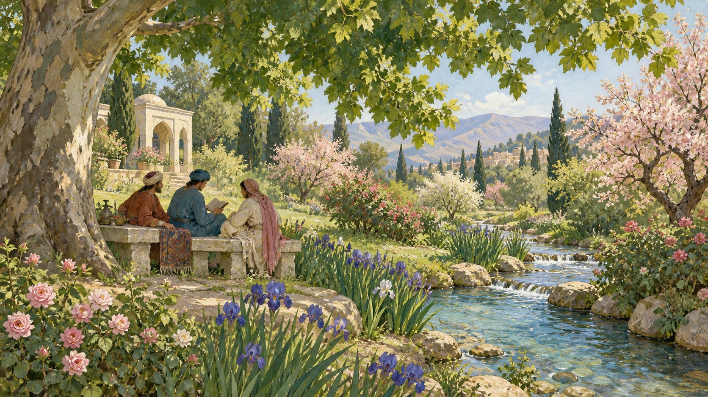
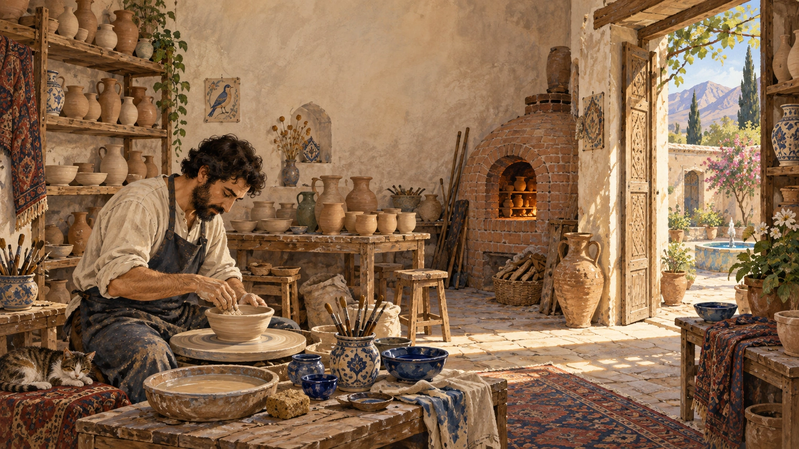
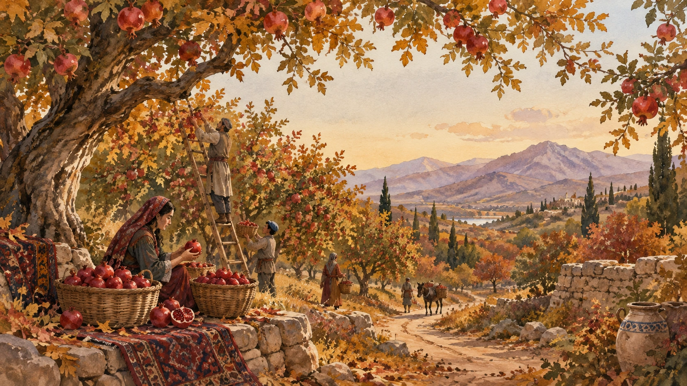
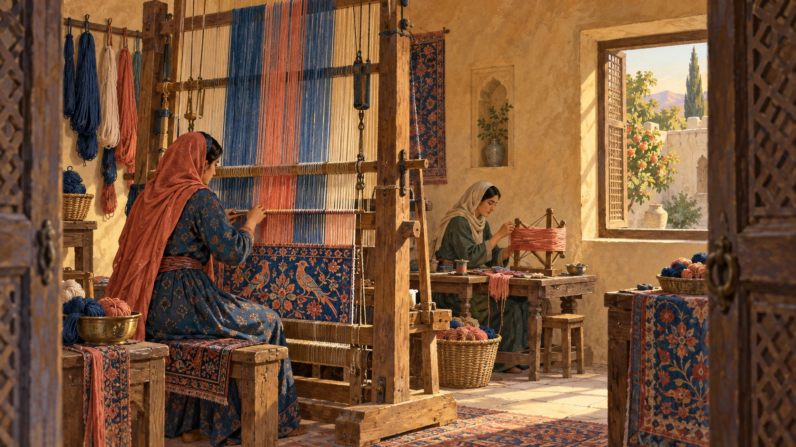

RESEARCH · LEARNING · IDEAS
AKI NOTES
研究を読み、数式をたどり、技術と社会を考える。
学びの途中で見つけたことを、このノートに残していきます。




RESEARCH & EXPLORATION
Human–Robot
Interaction
Illustrations generated with OpenAI
RESEARCH · LEARNING · IDEAS
研究を読み、数式をたどり、技術と社会を考える。
学びの途中で見つけたことを、このノートに残していきます。